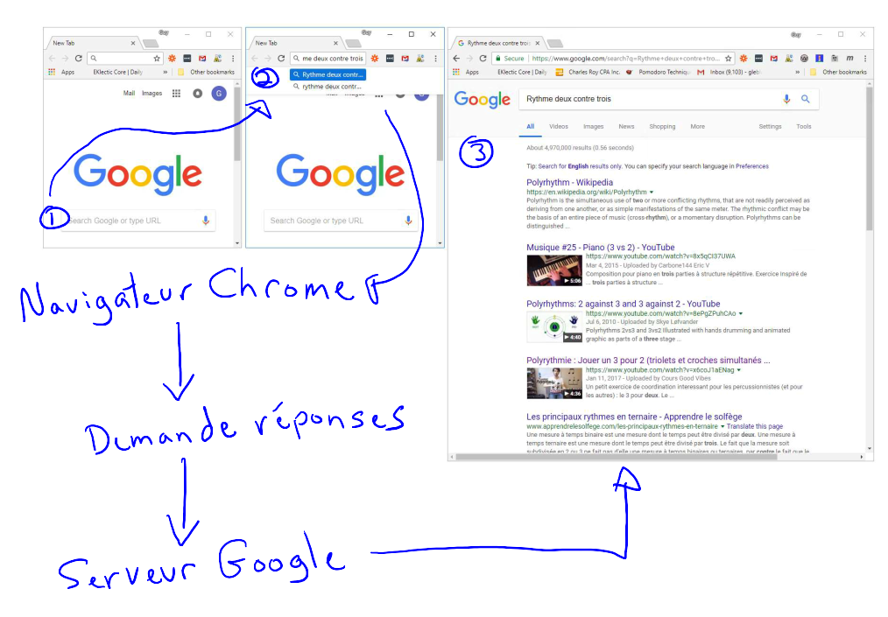
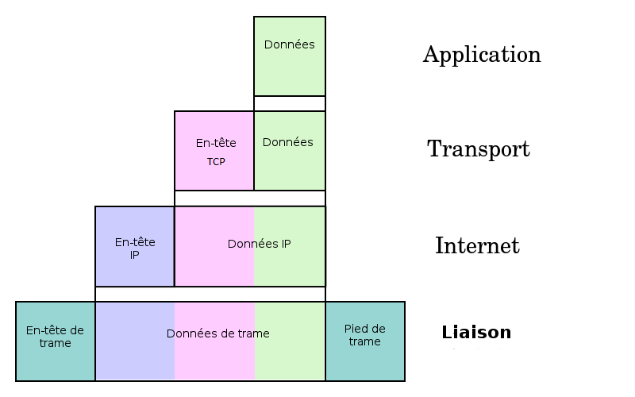

### Réseaux - Modèles OSI et TCP Par : Guy Leblanc Jeudi 2018-05-03
### Objectifs de la présentation - Comprendre l'organisation de base d'un réseau - Comprendre minimalement OSI - Comprendre minimalement TCP/IP - Comparaison de OSI et TCP/IP
### Les présentations
### Je suis Guy Leblanc - Je suis beauceron d'origine - J'ai fait de la musique dans le métro - J'ai fait la garde en rouge avec le 22e régiment à la citadelle de Québec - Ma spécialité est la performance des systèmes informatiques - Et je fais une heure d'auto formation par jour.
### Vie professionnelle - J'ai trente ans d'expérience en informatique - J'ai participé à toutes les étapes du cycle de vie du logiciel - J'ai travaillé dans le domaine de la recherche : Centre de recherche d'Hydro-Québec (IREQ), CRIM - Je travaille comme consultant depuis le début des années 90 - Plus de 100 projets dans des PME et grandes entreprises (Desjardins, Hydro-Québec, UdeS, ...)
### Formation - J'ai un diplôme de l'Université de Montréal en informatique - J'ai fait tous les cours pour une maîtrise en ergonomie du logiciel à la polytechnique
### Passe-temps - Je fais du sport (Marathon, duathlon, triathlon) - Je fais du bénévolat (Centre de bénévolat pour les personnes âgées, c'est récent)
### Comment ça marche un réseau? - Recherche Google - Exemple de recherche : Rythme deux contre trois
### Exemple de recherche 
### Vision simplifiée d'un réseau - Avec l'exemple précédent, nous pouvons avoir une vision simplifiée d'un réseau. - Le réseau permet la communication entre les entités. - Navigateur Chrome <-- Réseau --> Serveur Google
### Un réseau c'est plus que ça (trois principes de base) - Une organisation en **couches indépendantes superposées** dont chaque niveau offre **un service** à sa couche supérieure. (Le QUOI) - Une utilisation de **protocoles de communication** entre entité de même couche de manière virtuelle. (Le comment connu uniquement de chaque couche spécifique) - Une **interface** entre chacune des couches permettant d'échanger des informations. (Le comment des échanges entre les couches)
### La vision simplifiée n'avait qu'une seule couche - Cette couche était au niveau des applications - Navigateur Chrome <-- Réseau --> Serveur Google
### Les deux modèles de référence du jour - Le modèle OSI (Open Systems Interconnection) - Le modèle TCP/IP (Transport control protocol / Internet protocol) - Les modèles de référence sont comme les plans d'une maison. - Ce ne sont pas des réseaux comme tels.
### Le modèle OSI (Open Systems Interconnection) - Il est le modèle de référence - Il est composé de 7 niveaux - Considéré comme complet il permet de mieux comprendre les réseaux informatiques - Il a montré certaines faiblesses quand on a mis au point les premiers protocoles de réseaux qui désiraient le respecter (Performance, Complexité). - C'est un modèle construit à partir d'une approche théorique.
### OSI (Open Systems Interconnection) <a title="Par Offnfopt [Public domain ou CC0], de Wikimedia Commons" href="https://commons.wikimedia.org/wiki/File:OSI_Model_v1.svg"> <img width="40%" alt="OSI Model v1" src="https://upload.wikimedia.org/wikipedia/commons/thumb/8/8d/OSI_Model_v1.svg/langfr-476px-OSI_Model_v1.svg.png"> </a> [https://commons.wikimedia.org/wiki/File:OSI_Model_v1.svg](https://commons.wikimedia.org/wiki/File:OSI_Model_v1.svg) <!--  <img src="https://fr.wikipedia.org/wiki/Mod%C3%A8le_OSI#/media/File:OSI_Model_v1.svg" alt="Les couches du modèle OSI (1 de 2)" width="80%" height="80%"> -->
### OSI - Processus de transmission/réception <img src="https://user.oc-static.com/files/239001_240000/239082.png" alt="OSI - Processus de transmission/réception" width="70%" height="70%">
### TCP/IP (Transport control protocol / Internet protocol) - Il est le modèle de l'Internet que nous connaissons - Il est composé de 4 niveaux - Considéré très imparfait du point de vue conceptuel - Lacunes découlant de son mode de construction - La place qu'il occupe démontre sa force (bonne performance, simple). - C'est un modèle construit sur l'expérience terrain (Il faut d'abord que ça marche, puis nous pourrons l'améliorer)
### Les couches du modèle TCP/IP (Transport control protocol / Internet protocol) <a title="Les couches du modèle TCP/IP" href="./images/TCP_encapsulation-fr.png">  </a> - [https://commons.wikimedia.org/wiki/File:UDP_encapsulation-fr.png?uselang=fr](https://commons.wikimedia.org/wiki/File:UDP_encapsulation-fr.png?uselang=fr)
### TCP/IP - Processus de transmission/réception <img src="https://upload.wikimedia.org/wikipedia/commons/c/c4/IP_stack_connections.svg" alt="TCP/IP - Processus de transmission/réception" width="35%" height="35%"> [https://upload.wikimedia.org/wikipedia/commons/c/c4/IP_stack_connections.svg](https://upload.wikimedia.org/wikipedia/commons/c/c4/IP_stack_connections.svg) <!-- TODO 4 niveau -->
### Comparaison des modèles OSI et TCP/IP <img src="https://upload.wikimedia.org/wikipedia/commons/7/7e/Comparaison_des_mod%C3%A8les_OSI_et_TCP_IP.png" alt="Comparaison des modèles OSI et TCP/IP" width="35%" height="35%"> - [https://fr.wikibooks.org/wiki/Les_r%C3%A9seaux_informatiques/Version_imprimable#/media/File:Comparaison_des_mod%C3%A8les_OSI_et_TCP_IP.png](https://fr.wikibooks.org/wiki/Les_r%C3%A9seaux_informatiques/Version_imprimable#/media/File:Comparaison_des_mod%C3%A8les_OSI_et_TCP_IP.png)
### Comparaison des modèles OSI et TCP/IP (1 de 2) - OSI a eu le bénéfice de bien établir les trois principes (Interface, Service, Protocoles). - TCP/IP les a respectés sans jamais clairement les distingués. - OSI ne spécifiait pas et ne favorise pas de protocoles particuliers. - TCP/IP à débuter par une définition et implémentation des protocoles pour finir par arriver au modèle.
### Comparaison des modèles OSI et TCP/IP (2 de 2) - OSI a été conçu avec une approche du haut vers le bas. - TCP/IP a été conçu avec une approche du bas vers le haut. - OSI est un modèle offrant des modes communications avec ou sans connexion. - TCP/IP ne supporte que les communications sans connexion (ce qui ajoute du travail au niveau des applications).
### Références - [Réseaux / Andrew Tanenbaum, David Wetherall. - 5e édition. - Paris : Pearson Education France ; Paris, impr. 2011. - 1 vol. (XII-958 p.) : ill., couv. ill. en coul. ; 24 cm. - ISBN 978-2-7440-7521-6. 621.392 TAN](https://www.pearson.ch/download/media/9782744075216_SP_01.pdf) - [CS144 Introduction to Computer Networking Fall 2016 Stanford University](https://www.youtube.com/playlist?list=PLvFG2xYBrYAQCyz4Wx3NPoYJOFjvU7g2Z) - [Wikibooks : Les réseaux informatiques/Les modèles OSI et TCP](https://fr.wikibooks.org/wiki/Les_r%C3%A9seaux_informatiques/Les_mod%C3%A8les_OSI_et_TCP) - [Les réseaux de zéro](https://openclassrooms.com/courses/les-reseaux-de-zero) <!-- - Réseaux, 5e édition – Andrew Tanenbaum, David Wetherall [Table des matières](https://www.pearson.ch/download/media/9782744075216_TC.pdf), [1. Introduction](https://www.pearson.ch/download/media/9782744075216_SP_01.pdf) - [Wikipedia : Suite des protocoles Internet](https://fr.wikipedia.org/wiki/Suite_des_protocoles_Internet) - [Réseaux informatiques, modèle OSI et protocole TCP/IP](http://info.arqendra.net/Files/_Rsx+OSI+TCPIP_cours.pdf) - [Gestion de réseaux informatiques - description](http://cegepsherbrooke.qc.ca/fr/formation-continue/formation-pour-adultes/aec-temps-plein/gestion-de-reseaux-informatiques/gestion) - [Introduction aux réseaux et Modèle TCP/IP](http://w3.polytech.univ-montp2.fr/~karen.godary/Info_Indus/reseau/CoursRezo_Part1_Intro.pdf) - [1.Introduction - Modèle en couches - OSI TCP/IP ](http://dept-info.labri.fr/~felix/Annee2009-10/S2/ASR2%20Reseaux/Cours1.pdf) - [ASR3 Réseaux](http://dept-info.labri.fr/~felix/Annee2009-10/S3/ASR3-Reseau/1-Cours/S3-Cours1_OSI_TCPIP.pdf) - [UdeS Plan de cours INF 744 : Réseautique et télématique 1](https://www.usherbrooke.ca/cefti/fileadmin/sites/cefti/documents/Plan_de_cours/PDC_INF744.pdf) -->